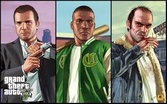

Grand Theft Auto V
Grand Theft Auto V is a 2013 action-adventure game developed by Rockstar North and published by Rockstar Games. It is the seventh main entry in the Grand Theft Auto series, following 2008's Grand Theft Auto IV, and the fifteenth instalment overall. Set within the fictional state of San Andreas, based on Southern California, the single-player story follows three protagonists—retired bank robber Michael De Santa (Ned Luke), street gangster Franklin Clinton (Shawn Fonteno), and drug dealer and gunrunner Trevor Philips (Steven Ogg), and their attempts to commit heists while under pressure from a corrupt government agency and powerful criminals. Players freely roam San Andreas's open world countryside and fictional city of Los Santos, based on Los Angeles. The game world is navigated on foot and by vehicle, from either a third-person or first-person perspective. Players control the protagonists throughout single-player and switch among them, both during and outside missions. The story is centred on the heist sequences, and many missions involve shooting and driving gameplay. A "wanted" system governs the aggression of law enforcement response to players who commit crimes. In Grand Theft Auto Online, the game's online multiplayer mode, up to 30 players engage in a variety of different cooperative and competitive game modes.
Characters
With Grand Theft Auto V, Rockstar has included three playable characters, which can be switched between at any time when off-mission. When not playing as a character, they will go about their daily lives doing their own thing. Some missions in GTA V will require just one character, some will be two, and some will include all three characters. You may get the option to switch between them when playing a mission with more than one, whereas sometimes it will be mandatory to switch. Having multiple playable characters plays an important role in mission structure and helps to improve upon the gameplay established in previous games.
Most popular character
- Franklin Clinton
- Trevor Philips
- Michael De Santa